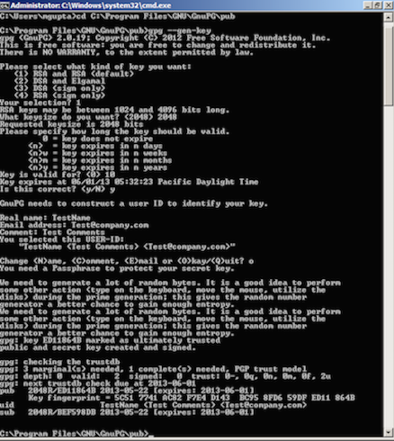
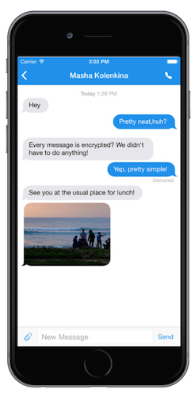
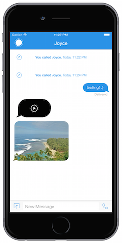
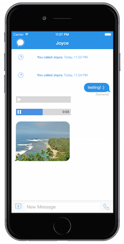
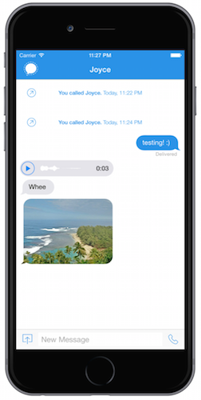

Audio Messages on Signal
Strong encryption has been around for a while. There is also a clear need for strong cryptography, especially in light of the NSA leaks by Edward Snowden. So why is encryption not commonly used to protect our most sensitive data, such as emails and text messages? The problem is that most encryption tools today, such as GPG, require knowledge of the command line. While early adopters of computers might have been more likely to be familiar with the command line, this is an unreasonable expectation for most users today. Interestingly, it's not the inability to create effective algorithms that's holding us back, it's the poor user experience of many of these tools that's preventing mainstream adoption.
Signal aims to change this. It's an iOS messaging app that's as easy to use as any other messaging app on your phone, and abstracts the complexities of encryption away from the user. It's been endorsed by whistleblowers and cryptographers as one of the most user-friendly encryption tools. Take a look at a comparison between command-line GPG and Signal to see how much easier it is to get encryption software up and ready to go with Signal:


One of the features I worked on in the 2.0 release of Signal was implementing support for audio messages. I was responsible for designing how the feature would look, as well as actually implementing the designs with code. This was the initial state of how audio messages looked when I joined the project:

In the initial design, tapping the black message bubble would play the audio message, but the user would receive no other UI clues for what's happening. The user would have no idea how far along in the message they are and how much time is left in the audio message. The next iteration I worked on focused on perfecting the user experience and designing the unit to provide useful information for the user:

This version was definitely a step up from the last. An audio message a user received would look like a gray bar with a play button, and tapping it would create an animation that would slide across as the message gets played, and would also display how much time is left in the audio message. While this was a huge improvement in terms of UX because it provided the user with much more useful information, it still looked pretty plain and the rectangular message bubble didn't fit in well with the rest of the app.

This was the final version I settled on. The wavelength is generated based on the audio contents of the message, and animates as the audio message is played. This is a much more polished look than the prior rectangular design, and fits in better with the rest of the message bubbles.